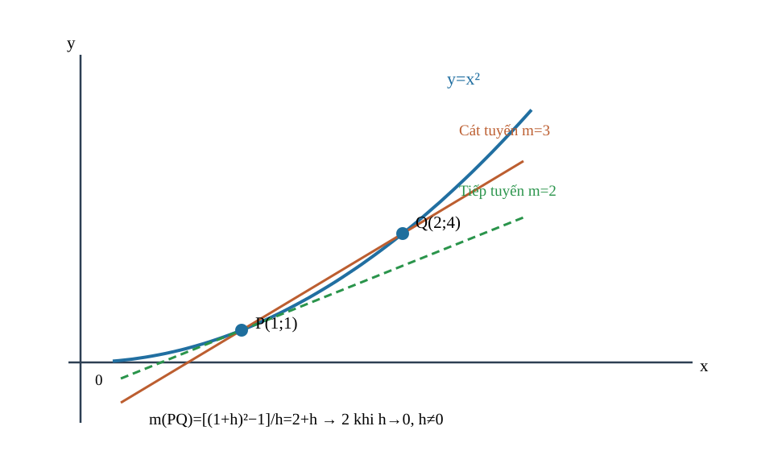
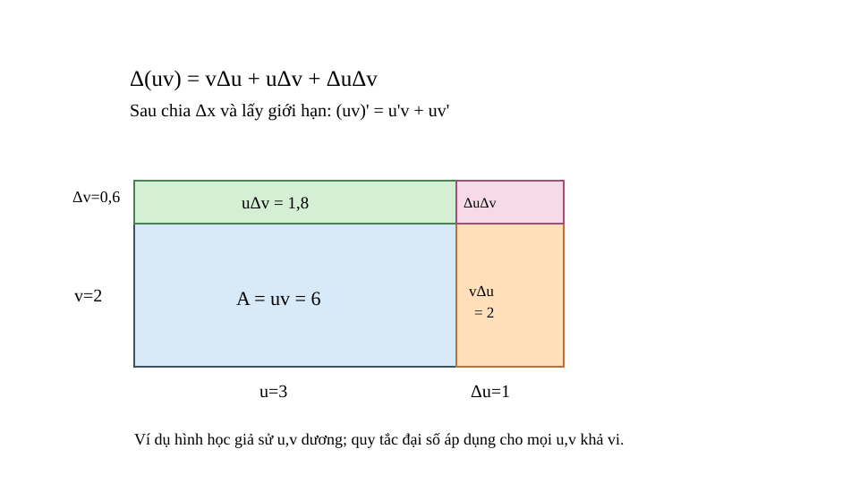
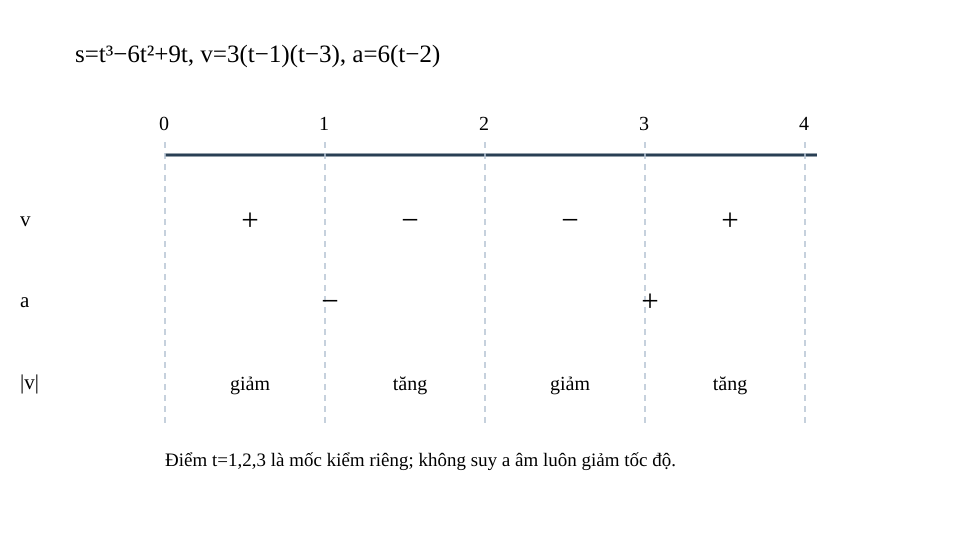
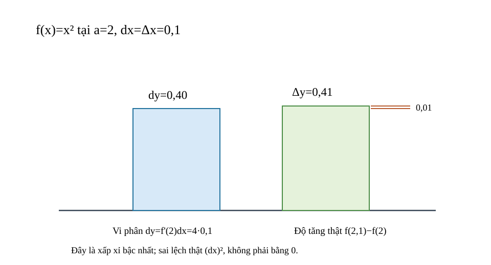

HỌC THEO CHUYÊN ĐỀ · CĐ09 · TOÁN THPT
Khám phá thêm: Mô hình trực quan Chuyên đề 09 (tùy chọn).
Kiến thức
1. Từ tốc độ trung bình đến độ dốc tại một điểm
Nếu tọa độ của một chiếc xe trên đường thẳng tăng 16 mét trong 2 giây (theo chiều dương đã chọn), vận tốc trung bình bằng 8 m/s. Nhưng nó có thể tăng tốc rồi giảm tốc trong khoảng đó: 8 m/s không nhất thiết là vận tốc tại một thời điểm cụ thể. Để biết điều gì xảy ra ngay lúc đang xét, ta cho hai thời điểm lại gần nhau, giống như thu hai điểm trên đồ thị cho một cát tuyến tiến gần vị trí tiếp tuyến. Đó là con đường hình thành đạo hàm từ một câu hỏi thực tế, chứ không phải bắt đầu bằng bảng công thức.
Để đo độ biến thiên tức thời, phải hiểu thương sai phân có nghĩa khi hai thời điểm khác nhau và giới hạn hai phía tồn tại. Khi đã làm chủ giới hạn này, ta mới tính đạo hàm bằng quy tắc, dùng nó giải thích độ dốc, vận tốc, gia tốc và xấp xỉ gần điểm.
1.1. Vận tốc trung bình
Nếu tọa độ của xe tăng 16 mét trong 2 giây, vận tốc trung bình là 8 m/s. Nhưng nếu xe đi 8 mét rồi quay lại 8 mét, quãng đường vẫn là 16 mét, tốc độ trung bình là 8 m/s, còn độ dời và vận tốc trung bình đều bằng 0. Nhưng con số 8 chưa nói xe chuyển động nhanh bao nhiêu đúng tại một thời điểm. Để hiểu sự khác biệt, hãy bắt đầu với một đại lượng \(s(t)\) biểu diễn tọa độ theo thời gian. Trên đoạn thời gian \([a;b]\) với \(a<b\), vận tốc trung bình có hướng bằng \(\frac{s(b)-s(a)}{b-a}\); tử số là độ dời, mẫu số là khoảng thời gian và đơn vị là mét trên giây nếu \(s\) đo bằng mét.
CÔNG THỨC — Vận tốc trung bình. Xét \(s(t)=2t^2\) (m) trong khoảng từ \(t=1\) đến \(t=3\) giây. Tọa độ tăng từ \(s(1)=2\) đến \(s(3)=18\), tức độ dời 16 m trong 2 s. Vận tốc trung bình là \(\frac{18-2}{3-1}=8\) m/s. Ta phải dùng hiệu hai tọa độ chia hiệu hai thời điểm, không phải \(\frac{s(3)}3\). Ở bước tiếp theo, khi hai thời điểm tiến sát nhau, ý tưởng này sẽ dẫn tới đạo hàm và vận tốc tức thời.
Ví dụ
Đề bài: \(s(t)=3t^2+2\) (m), \(t\ge0\) (s). Tính vận tốc trung bình trên \([1;2]\).
Lời giải: \(s(1)=5\), \(s(2)=14\); độ dời 9 m trong 1 s, nên vận tốc trung bình \(\frac{14-5}{2-1}=9\) m/s. Không đồng nhất vận tốc trung bình và tức thời.
Vận dụng Hàm \(f(x)=x^2\) biến đổi trung bình bao nhiêu trên khoảng \([0;2]\)?
Đối chiếu
\(\frac{f(2)-f(0)}{2-0}=\frac{4-0}2=2\) đơn vị đầu ra trên một đơn vị đầu vào. Nếu em dùng \(\frac{f(2)}2\) ở trường hợp này thì may mắn ra cùng kết quả vì \(f(0)=0\); hãy thử khoảng \([1;3]\) để thấy công thức đúng phải dùng **hai hiệu**. **Kiểm lỗi** Nếu dùng giá trị tại cuối khoảng chia cho thời gian thay vì **độ dời**, đọc **Kiến thức 1.1** rồi giải **Bài 1** và **Bài 3**. Tách hiệu tọa độ khỏi quãng đường và giữ đơn vị m/s.1.2. Cát tuyến và giới hạn độ dốc
PHƯƠNG PHÁP — Cát tuyến và giới hạn độ dốc. Để thấy tốc độ tức thời, ta cho hai điểm trên đồ thị tiến sát nhau. Đường thẳng qua hai điểm tiến gần nhau có thể tiết lộ độ nghiêng của đồ thị tại một điểm? Ta đã biết \(P(a;f(a))\), \(Q(a+h;f(a+h))\), giới hạn \(h\to0\) từ hai phía. Cát tuyến PQ có hệ số góc \(\frac{f(a+h)-f(a)}h\) với \(h\ne0\). Nếu thương có giới hạn hữu hạn khi \(h\to0\) từ cả hai phía thuộc miền, ta có độ dốc tiếp tuyến; không thế \(h=0\) trước khi rút. 'Cát tuyến' là qua hai điểm phân biệt, 'tiếp tuyến' là giới hạn vị trí/hệ số góc.
Chẳng hạn, \(f(x)=x^2\), \(a=1\): thương \(\frac{(1+h)^2-1}h=2+h\), \(h\ne0\); khi \(h\to0\) thu 2. Chọn khai triển vì thương ban đầu cho \(\frac00\).
Ví dụ
Đề bài: Với \(f(x)=x^2\) tại \(a=-2\), tính hệ số góc cát tuyến ứng với bước \(h\ne0\) và giới hạn.
Lời giải: \(\frac{(-2+h)^2-4}h=-4+h\) (\(h\ne0\)); khi \(h\to0\), độ dốc tiếp tuyến bằng −4. Hình cát tuyến ở mục 1.3 dùng điểm có hoành độ 1, không phải −2 trong ví dụ này.
Vận dụng \(f(x)=x^2\),\(a=3\): hệ số góc cát tuyến theo h là gì?
Đối chiếu
\(\frac{(3+h)^2-9}h=6+h\), \(h\ne0\); giới hạn 6. Nếu gọi \(\frac00\) là độ dốc, cần biểu diễn h khác 0 và khử nhân tử. **Kiểm lỗi** Nếu thay \(h=0\) trực tiếp vào thương sai phân rồi viết \(\frac00\), đọc **Kiến thức 1.2**, làm **Bài 4** và **Bài 6**; rút gọn khi \(h\ne0\) trước khi cho \(h\to0\).1.3. Đạo hàm bằng định nghĩa
Giới hạn thương sai phân đưa ta tới định nghĩa đạo hàm. Vì sao một đạo hàm là một giới hạn chứ không chỉ là bảng công thức? Ta sử dụng giới hạn hàm số CĐ08 và \(f(a)\), \(f(a+h)\) thuộc miền.
ĐỊNH NGHĨA — Đạo hàm tại một điểm. Với hàm xác định trên một khoảng mở chứa \(a\), \(f'(a)=\displaystyle\lim_{h\to0}\frac{f(a+h)-f(a)}h\), nếu giới hạn hữu hạn từ cả hai phía tồn tại. Đạo hàm một phía riêng lẻ chưa đủ kết luận có đạo hàm thông thường tại \(a\).
Đặt \(h=x-a\), ta có cách viết tương đương trong SGK:
Để tính bằng định nghĩa: tính \(f(x)-f(a)\), lập thương khi \(x\ne a\), rồi tìm giới hạn hữu hạn. Tính bằng định nghĩa giúp kiểm công thức có áp dụng hay không.
Xét ví dụ: \(f=x^3\) tại \(a=2\): \((2+h)^3-8=12h+6h^2+h^3\), chia cho \(h\ne0\), được \(12+6h+h^2\to12\) khi \(h\to0\). Chọn khai triển vì yêu cầu định nghĩa, không dùng ngay quy tắc \(3x^2\).
Hình minh họa riêng \(f(x)=x^2\) tại \(a=1\): điểm cố định \(P=(1;1)\), điểm \(Q=(2;4)\) ứng với \(h=1\) cho hệ số góc cát tuyến \(\frac{4-1}{2-1}=3\). Khi \(Q=(1+h;(1+h)^2)\) tiến gần \(P\), hệ số góc \(2+h\) tiến tới 2; tiếp tuyến tại \(P\) có phương trình \(y=2x-1\). Khác với ví dụ \(f=x^3\) phía trên, hình đang vẽ parabol bình phương tại \(x=1\).

Đọc hình: Điểm \(P=(1;1)\) trên \(y=x^2\) được giữ cố định; \(Q=(2;4)\) cho độ dốc 3. Khi \(h\to0\), cát tuyến \(PQ\) tiến về tiếp tuyến \(y=2x-1\) có độ dốc 2. Không được thế \(h=0\) trực tiếp vào mẫu số thương sai phân.
Ví dụ
Đề bài: Dùng định nghĩa tính \(f'(1)\) cho \(f(x)=x^3\).
Lời giải: \(\frac{(1+h)^3-1}h=3+3h+h^2\) với \(h\ne0\), tiến 3 khi \(h\to0\) từ hai phía. Vậy \(f'(1)=3\).
Vận dụng Tính \(f'(0)\) theo định nghĩa nếu \(f(x)=x^2\).
Đối chiếu
\(\frac{h^2-0}h=h\to0\), nên \(f'(0)=0\). Nếu quên 'hai phía', so giới hạn thương khi \(h>0\) và \(h<0\). **Kiểm lỗi** Nếu dùng quy tắc lũy thừa mà đề yêu cầu định nghĩa, đọc **Kiến thức 1.3**, làm **Bài 8** rồi **Bài 10**; dựng thương sai phân tại đúng a và kiểm giới hạn hai phía.1.4. Miền khả vi
Không chỉ xét một điểm riêng lẻ, ta còn cần biết đạo hàm tồn tại trên cả một khoảng hay không.
ĐỊNH NGHĨA — Đạo hàm trên một khoảng. Hàm số \(f\) có đạo hàm trên khoảng \((a;b)\) nếu tại mọi \(x\in(a;b)\), giới hạn thương sai phân xác định một đạo hàm hữu hạn \(f'(x)\). Khi đó \(x\mapsto f'(x)\) là hàm số đạo hàm, kí hiệu \(y'=f'(x)\). Một điểm thuộc miền xác định của \(f\) chưa chắc thuộc miền xác định của \(f'\).
Biết hàm số có đạo hàm tại một điểm, chẳng hạn \(x=2\), chưa thể suy ra có đạo hàm ở mọi điểm trên một khoảng. Có thể chứng minh đạo hàm tồn tại tại một điểm bất kỳ của khoảng (không cần liệt kê từng điểm) và không được đồng nhất miền xác định của hàm gốc với miền mà đạo hàm tồn tại. Với hàm căn bậc hai, công thức đạo hàm chỉ dùng được khi \(x>0\); tại biên \(x=0\), thương sai phân từ bên phải không có giới hạn hữu hạn.
Chẳng hạn, \(f(x)=\sqrt{x}\) xác định khi \(x\ge0\). Với \(x>0\) bất kỳ và \(h\ne0\) đủ nhỏ để \(x+h>0\), nhân liên hợp:
Vì giới hạn hữu hạn này tồn tại tại mọi \(x>0\), đó là miền khả vi của hàm căn. Tại \(x=0\), không thể lấy đạo hàm hai phía trên ℝ và thương sai phân từ bên phải tiến tới \(+\infty\); không ghi \(f'(0)=\infty\) như đạo hàm hữu hạn.
Ví dụ
Đề bài: Xác định nơi khả vi của \(f(x)=\sqrt{x-5}\).
Lời giải: Miền \(x\ge5\). Với \(x>5\), nhân liên hợp tương tự cho thương \(\frac{1}{\sqrt{x+h-5}+\sqrt{x-5}}\to\frac{1}{2\sqrt{x-5}}\). Ở \(x=5\) thiếu phía trái và thương sai phân phải \(\frac1{\sqrt h}\to+\infty\), nên không có đạo hàm hai phía hữu hạn.
Vận dụng Hàm \(f(x)=\frac1x\) có đạo hàm ở mọi \(x\in\mathbb R\) không?
Đối chiếu
Không; chỉ trên \(\mathbb R\setminus\{0\}\). Với \(x\ne0\) và \(h\) đủ nhỏ khác 0, thương sai phân \(\frac{\frac1{x+h}-\frac1x}{h}=-\frac1{x(x+h)}\to-\frac1{x^2}\), nên đạo hàm tồn tại ở mỗi điểm đó. Nếu áp công thức ngoài miền, bắt đầu bằng định nghĩa miền xác định. **Kiểm lỗi** Nếu ghi đạo hàm tại điểm ngoài miền hoặc cho căn có đạo hàm hữu hạn tại đầu mút một phía, đọc **Kiến thức 1.4**, làm **Bài 11** và **Bài 13**; phân biệt miền xác định với khả vi hai phía.1.5. Khả vi kéo theo liên tục
Có đạo hàm kéo theo liên tục, nhưng điều ngược lại chưa chắc đúng. Có thể đồ thị liên tục vẫn có một góc gãy không? Cần nhớ tiêu chuẩn liên tục tại điểm và giới hạn \(h\to0\).
ĐỊNH LÝ — Khả vi kéo theo liên tục. Nếu \(f\) có đạo hàm hữu hạn tại điểm trong \(a\), thì \(f\) liên tục tại \(a\). Chiều đảo không đúng nói chung: \(f(x)=|x|\) liên tục tại \(0\) nhưng không có đạo hàm hai phía vì các độ dốc một phía lần lượt là \(-1\) và \(1\).
Vì sao? Khi \(h\to0\), nếu đạo hàm hữu hạn tồn tại thì \(\frac{f(a+h)-f(a)}{h}\to f'(a)\). Do đó
Suy ra \(f(a+h)\to f(a)\), đúng điều kiện liên tục. Chiều đảo sai: liên tục không đảm bảo hai độ dốc một phía bằng nhau.
Chẳng hạn, Xét \(|x-1|\) tại1: f liên tục vì \(|x-1|\to0\); đạo hàm trái−1, phải+1 nên không khả vi. Chọn xét thương để bác bỏ mệnh đề đảo.
Ví dụ
Đề bài: Xét \(f(x)=|2x+3|\) tại \(a=-\frac32\): có liên tục và khả vi không?
Lời giải: Tại \(a=-\frac32\), \(f(a)=0\) và \(f(a+h)=|2h|\), tiến tới 0 nên hàm liên tục. Với \(h\ne0\), thương sai phân là \(\frac{|2h|}h\), bằng \(-2\) khi \(h<0\), bằng \(2\) khi \(h>0\); hai giới hạn khác nhau nên không khả vi tại a.
Vận dụng Xét \(f(x)=|x|+x\) tại \(0\). Hàm có liên tục không? Tính thương sai phân từ trái và phải để quyết định có đạo hàm hay không.
Đối chiếu
Hàm liên tục tại \(0\) vì \(|h|+h\to0=f(0)\). Với \(h<0\), \(|h|+h=0\) nên thương bằng 0; với \(h>0\), thương bằng 2. Hai giới hạn khác nhau, nên hàm không khả vi tại 0. Nếu dùng tính liên tục để suy đạo hàm, đối chiếu phản ví dụ góc nhọn. **Kiểm lỗi** Nếu suy ngược 'liên tục ⇒ khả vi', đọc **Kiến thức 1.5**, làm **Bài 14** và **Bài 16**; \(|x|\) liên tục tại góc nhọn nhưng đạo hàm trái/phải khác nhau.1.6. Đạo hàm một phía
ĐỊNH NGHĨA — Đạo hàm một phía. Góc nhọn cho thấy hai đạo hàm một phía có thể khác nhau. Một tiếp tuyến duy nhất có độ dốc hữu hạn có hình thành tại điểm gấp khúc? Để xác định điều đó, cần xét hàm trị tuyệt đối và xét dấu h. Khi các phía tương ứng thuộc miền xác định, ta đặt
Tại một điểm trong, đạo hàm thông thường tồn tại khi và chỉ khi hai giới hạn này cùng hữu hạn và bằng nhau. Tại góc nhọn \(|x-a|\) chúng thường trái dấu. Có thể có đạo hàm một phía nhưng không có đạo hàm hai phía; không gộp hai độ dốc thành 0.
Chẳng hạn, \(f(x)=|x-3|\) tại 3: \(\frac{|h|-0}h=-1\) khi \(h<0\), +1 khi \(h>0\). Chọn xét dấu tuyệt đối trước, nên không có \(f'(3)\).
Ví dụ
Đề bài: Cho \(f(x)=3x\) nếu \(x<0\), \(f(x)=x^2\) nếu \(x\ge0\). Xét tại 0.
Lời giải: Giới hạn hai phía bằng \(0=f(0)\) nên liên tục. Với \(h<0\), thương sai phân là \(\frac{3h-0}h=3\); với \(h>0\), thương là \(\frac{h^2-0}h=h\to0\). Hai giới hạn khác nhau; đạo hàm hai phía tại 0 không tồn tại.
Vận dụng Tại \(x=0\), đạo hàm một phía của \(|2x|\) là gì?
Đối chiếu
Trái −2, phải +2, không có đạo hàm hai phía. Nếu một bài chỉ cho đồ thị, kiểm bên trái và bên phải tại điểm gãy. **Kiểm lỗi** Nếu lấy một độ dốc cho cả trái và phải ở điểm gãy, đọc **Kiến thức 1.6**, làm **Bài 18** và **Bài 20**; vẽ hai nhánh rồi xét hai giới hạn thương riêng.2. Từ đạo hàm là một số đến ý nghĩa trên hình và trong đời sống
Biết \(f'(a)=2\) chưa đủ nếu không biết \(a\) là vị trí nào và \(f(a)\) mang đơn vị gì. Trên đồ thị, đạo hàm là độ dốc của tiếp tuyến tại \((a,f(a))\), không phải tung độ điểm đó; với chuyển động, đạo hàm theo thời gian là vận tốc có hướng. Đạo hàm dương cho biết độ dốc tiếp tuyến dương, không có nghĩa bản thân giá trị hàm phải dương hoặc hàm đồng biến trên cả một khoảng.
2.1. Hệ số góc tiếp tuyến
TÍNH CHẤT — Hệ số góc tiếp tuyến. Vì sao biết tọa độ P chưa nói được đường tiếp tuyến nghiêng bao nhiêu? Ta đã biết định nghĩa hệ số góc đường thẳng và đạo hàm. Đạo hàm \(f'(a)\) là hệ số góc của tiếp tuyến nếu tồn tại, còn \(f(a)\) là tung độ điểm tiếp xúc. Đây là hai số thường khác nhau, có thể một số 0 còn số kia không. Nếu \(f'(a)>0\), thương sai phân \(\frac{f(a+h)-f(a)}h\) dương với mọi \(h\ne0\) đủ nhỏ; điều đó mô tả chiều biến thiên so với giá trị tại \(a\). Không được suy ngược rằng hàm đồng biến nghiêm ngặt thì đạo hàm phải dương ở mọi điểm: \(f(x)=x^3\) đồng biến nghiêm ngặt trên \(\mathbb R\), nhưng \(f'(0)=0\) (thương sai phân tại 0 là \(h^2\to0\)). Độ dốc âm cũng không đồng nghĩa tung độ âm.
Chẳng hạn, \(y=x^2+1\) tại \(x=1\): \(P(1;2)\) và \(f'(1)=2\). Tiếp tuyến có độ dốc2, tung độ tại điểm2; hai giá trị trùng do bài này ngẫu nhiên, không phải quy tắc. Ở \(x=0\) có \(f(0)=1\) nhưng \(f'(0)=0\).
Nếu gọi \(\alpha\) là góc định hướng từ chiều dương trục hoành đến tiếp tuyến không thẳng đứng, thì hệ số góc \(k=\tan\alpha=f'(a)\). Vì vậy một giới hạn về góc nghiêng trong bài toán thiết kế đường dốc phải được chuyển thành giới hạn về hệ số góc bằng hàm tang; không nhầm số \(f'(a)\) với một góc đo bằng độ.
Ví dụ
Đề bài: Cho \(f(x)=x^2+4x-5\). Tìm tung độ và hệ số góc tiếp tuyến tại \(x=1\).
Lời giải: \(f(1)=1+4-5=0\), nên điểm tiếp xúc là \(P(1;0)\). \(f'(x)=2x+4\), suy ra \(f'(1)=6\) là hệ số góc của tiếp tuyến, không phải tung độ. Độ dốc bằng 6 trong khi tung độ bằng 0, nên cần phân biệt rõ hai đại lượng.
Vận dụng \(f(x)=x^2+2\) tại \(x=0\), độ dốc và tung độ lần lượt bao nhiêu?
Đối chiếu
Độ dốc \(f'(0)=0\); tung độ \(f(0)=2\). Nếu nhầm giá trị và độ dốc, ghi riêng \(P(a;f(a))\) và \(m=f'(a)\). **Kiểm lỗi** Nếu lấy \(f(a)\) làm hệ số góc, đọc **Kiến thức 2.1**, giải **Bài 23** rồi **Bài 24**; tọa độ điểm tiếp xúc và \(f'(a)\) là hai đại lượng khác nhau.2.2. Viết phương trình tiếp tuyến
CÔNG THỨC — Viết phương trình tiếp tuyến. Khi có độ dốc, ta viết phương trình tiếp tuyến. Một độ dốc có đủ để viết đường tiếp tuyến không? Ta sử dụng dạng đường thẳng \(y-y_0=m(x-x_0)\), giá trị \(f(a)\). Tiếp tuyến nếu đạo hàm hữu hạn tại a có phương trình \(y-f(a)=f'(a)(x-a)\). Phải lấy đúng cả tọa độ điểm và hệ số góc, không thay \(f''\) hay \(f(a)\) làm độ dốc. Nên kiểm đường đã tìm đi qua P.
Xét ví dụ: Với \(f=x^2\) tại \(a=2\), \(P(2;4)\), \(m=4\) ⇒ \(y-4=4(x-2)\) ⇒ \(y=4x-4\). Chọn điểm-hệ số góc để tránh sai hằng số.
Ví dụ
Đề bài: Viết tiếp tuyến với \(y=x^2+3x\) tại \(x=1\).
Lời giải: Điểm \(P(1;4)\), đạo hàm \(2x+3\) cho \(m=5\); tiếp tuyến \(y-4=5(x-1)\), tức \(y=5x-1\). Thay \(x=1\) kiểm đi qua P.
Vận dụng Phương trình tiếp tuyến của đồ thị \(y=x^3\) tại \(x=0\) là gì?
Đối chiếu
\(f(0)=0\), \(f'(0)=0\) ⇒ \(y=0\). Nếu kết quả không qua \((a;f(a))\), thế lại \(x=a\) để phát hiện. **Kiểm lỗi** Nếu viết đường thẳng không đi qua \((a;f(a))\) hoặc nhầm tung độ với đạo hàm, đọc **Kiến thức 2.2**, giải **Bài 25** và **Bài 27**, thử thế \(x=a\) vào phương trình tiếp tuyến.2.3. Vận tốc có hướng
CÔNG THỨC — Vận tốc có hướng. Trong chuyển động trên một trục thẳng, nếu \(s(t)\) là tọa độ có dấu của vật đo bằng mét tại thời điểm \(t\) đo bằng giây, thì độ dốc của đồ thị \(s(t)\) cho vận tốc có hướng \(v(t)=s'(t)\), đơn vị m/s. Vật có thể có vận tốc \(-2\) m/s mà tốc độ vẫn dương không? Có: tốc độ là \(|v(t)|\), luôn không âm; còn \(v(t)<0\) chỉ nói vật đang chuyển động theo chiều âm, không tự khẳng định đang chậm dần.
Chẳng hạn, \(s(t)=t^2-6t\) (m), \(t\ge0\): \(v(t)=2t-6\); tại \(t=2\), \(v=-2\) m/s, tốc độ2 m/s. Chọn trị tuyệt đối chỉ sau khi xác định vận tốc có hướng.
Ví dụ
Đề bài: \(s(t)=t^2-5t+2\) (m), \(t\ge0\) (s). Tính vận tốc và tốc độ tại \(t=1\).
Lời giải: \(v(t)=2t-5\), \(v(1)=-3\) m/s có hướng âm; tốc độ \(|v(1)|=3\) m/s. Dấu v chưa đủ kết luận đang chậm dần.
Vận dụng Với \(s(t)=-3t\) (m), tốc độ là bao nhiêu?
Đối chiếu
\(v=-3\) m/s, tốc độ3 m/s. Nếu gọi tốc độ âm, kiểm định nghĩa \(|v|\). **Kiểm lỗi** Nếu gọi vận tốc âm là tốc độ âm, đọc **Kiến thức 2.3**, làm **Bài 29** và **Bài 31**; vận tốc \(s'(t)\) có hướng còn tốc độ là \(|s'(t)|\).2.4. Đơn vị của đạo hàm
TÍNH CHẤT — Đơn vị của đạo hàm. Đơn vị của đạo hàm tùy đại lượng đầu vào và đầu ra. Đạo hàm của nhiệt độ theo phút có phải nhiệt độ hay tốc độ nhiệt độ đang thay đổi? Cần nhớ đơn vị, tỉ số độ biến thiên đầu ra và độ biến thiên đầu vào. \(f'(a)\) có đơn vị bằng đơn vị của đầu ra chia cho đơn vị của đầu vào. Nhiệt độ \(T(t)\) tính bằng °C, \(t\) tính bằng phút thì \(T'(t)\) có đơn vị °C/phút; độ cao \(s(t)\) tính bằng mét và \(t\) tính bằng giây thì \(s'(t)\) có đơn vị m/s. Có thể nói đạo hàm dương/âm và mức biến thiên tức thời trong phạm vi mô hình, không dùng giá trị hàm thay tốc độ.
Chẳng hạn, \(T(t)=15+2t-0{,}5t^2\) °C; \(T'(t)=2-t\), tại \(t=1\) là +1 °C/phút. Chọn tốc độ biến thiên thay vì tính \(T(1)=16{,}5\) °C.
Không chỉ vận tốc và nhiệt độ: trong mạch điện, nếu điện lượng \(Q(t)\) tính bằng coulomb đi qua tiết diện dây trong \(t\) giây, cường độ dòng điện trung bình là \(\dfrac{Q(t_2)-Q(t_1)}{t_2-t_1}\), còn cường độ tức thời là \(I(t)=Q'(t)\), tính bằng ampere. Ví dụ \(Q(t)=t^2+3t\) (C) trên \(t\ge0\) cho \(I(t)=2t+3\) (A), nên tại \(t=2\) s ta được \(I(2)=7\) A. Đây cũng là cùng một ý tưởng thương sai phân tiến đến giới hạn, không phải một quy tắc đạo hàm mới. Tương tự, trong kinh tế, nếu \(C(x)\) là mô hình chi phí sản xuất \(x\) sản phẩm, \(C'(x)\) là chi phí cận biên (đồng/sản phẩm). Với số lượng nguyên và bước tăng một sản phẩm, \(C'(x)\) chỉ là xấp xỉ của \(C(x+1)-C(x)\) khi mô hình thay đổi đủ chậm, không phải đẳng thức tổng quát.
Ví dụ
Đề bài: \(T(t)=18+t^2-3t\) °C, t tính phút. Tính \(T'(2)\) và nêu đơn vị.
Lời giải: \(T'(t)=2t-3\); \(T'(2)=1\) °C/phút, tức nhiệt độ tăng tức thời. Giá trị \(T(2)=16\) °C là đại lượng khác.
Vận dụng Nếu giá \(P(x)=50+3x\) đồng, x là số sản phẩm được mô hình hóa bằng biến thực không âm, \(P'(x)\) có đơn vị gì?
Đối chiếu
3 đồng/sản phẩm (tỉ lệ biến thiên cận biên của mô hình). Nếu viết đơn vị đồng, bạn đang trả giá trị P thay vì đạo hàm. **Kiểm lỗi** Nếu bỏ đơn vị mẫu của đạo hàm, đọc **Kiến thức 2.4**, làm **Bài 33** và **Bài 35**; đơn vị của tốc độ biến thiên phải là đơn vị đầu ra trên một đơn vị đầu vào.3. Khi một biểu thức có nhiều thành phần cùng biến đổi
Ta đã biết cách tìm đạo hàm từ thương sai phân, nhưng không thể cứ khai triển thương ấy cho mọi hàm dài. Nếu một hàm là tổng, ta xem từng phần biến đổi; nếu là tích, cả hai thừa số đều có thể đổi nên phải cộng đóng góp của cả hai; nếu là thương, mẫu không được bằng 0; nếu là hàm lồng, độ biến đổi của phần ngoài phụ thuộc phần trong. Những quy tắc này chính là cách giữ ý nghĩa tốc độ biến thiên mà tính được nhanh hơn.
3.1. Lũy thừa và hằng số
CÔNG THỨC — Lũy thừa và hằng số. Có thể tìm đạo hàm của đa thức nhanh mà vẫn hiểu vì sao hệ số n xuất hiện? Để xác định điều đó, cần xét hằng số và phép khai triển \((x+h)^n\) (n nguyên dương). Từ định nghĩa và khai triển, \(\frac{(x+h)^n-x^n}h\) có hạng đầu \(nx^{n-1}\), các hạng khác chứa h và về0. Do đó \((x^n)'=nx^{n-1}\) (n nguyên dương), \((c)'=0\). Không áp quy tắc đa thức cho cơ số \(a^x\) mà không phân biệt biến nằm ở đâu.
Chẳng hạn, \(y=3x^4-2\): đạo hàm \(3\cdot4x^3=12x^3\) và đạo hàm hằng−2 bằng0. Chọn tính từng hạng sau khi đã hiểu giới hạn khai triển.
Ví dụ
Đề bài: Lấy đạo hàm \(y=4x^5-3x^3+7\).
Lời giải: Dùng đạo hàm từng hạng: \(y'=4\cdot5x^4-3\cdot3x^2+0=20x^4-9x^2\). Biến ở cơ số x, không phải ở số mũ như \(a^x\).
Vận dụng \((7x^3-4)'\) bằng bao nhiêu?
Đối chiếu
\(21x^2\). Nếu ra \(7x^2\), bạn bỏ hệ số mũ 3. **Kiểm lỗi** Nếu quên nhân số mũ hoặc đạo hàm hằng số khác 0, đọc **Kiến thức 3.1**, làm **Bài 36** và **Bài 38**; kiểm từng hạng của đa thức.3.2. Căn thức và điểm biên
CÔNG THỨC — Căn thức và điểm biên. Hàm căn nhắc ta công thức luôn gắn với miền. Có giá trị \(\sqrt0=0\) nhưng vì sao vẫn không có công thức \(f'(0)\) hữu hạn? Ta đã biết căn không âm, nhân liên hợp và giới hạn một phía. \(\sqrt x\) được định nghĩa trên \(x\ge0\). Trên \(x>0\), thương sai phân nhân liên hợp dẫn \((\sqrt x)'=\frac1{2\sqrt x}\). Tại 0, thương phải \(\frac{\sqrt h}h=\frac1{\sqrt h}\to+\infty\), nên không có đạo hàm hữu hạn (và thiếu phía trái). Với \(\sqrt{g(x)}\), công thức đạo hàm hàm hợp ở mục 3.6 áp dụng nơi \(g(x)>0\) và \(g\) khả vi. Nếu \(g(x)=0\), cần xét trực tiếp, không tự kết luận từ mẫu bằng 0 của công thức.
Chẳng hạn, \(f=\sqrt{x+4}\): miền \(x\ge-4\), \(f'(x)=\frac1{2\sqrt{x+4}}\) với \(x>-4\). Chọn xét miền trước khi áp bảng vì tại biên mẫu sẽ bằng0.
Ví dụ
Đề bài: Tìm miền và đạo hàm của \(g(x)=\sqrt{2x+5}\).
Lời giải: \(D=[-\frac52;+\infty)\). Với \(x>-\frac52\), dùng liên hợp ngay từ thương sai phân (chưa cần quy tắc hàm hợp):
Hệ số 2 ở tử xuất phát từ hiệu hai biểu thức trong căn bằng \(2h\). Ở biên không có đạo hàm hai phía hữu hạn.
Vận dụng \(f(x)=\sqrt{x-1}\), có đạo hàm hữu hạn tại \(x=1\) không?
Đối chiếu
Không; hàm xác định tại 1 nhưng thương sai phân từ bên phải tiến tới \(+\infty\). Nếu chỉ xét \(x-1\ge0\), còn phải kiểm mẫu đạo hàm khác0. **Kiểm lỗi** Nếu dùng công thức căn ngay ở điểm biên mà mẫu trở thành 0, đọc **Kiến thức 3.2**, làm **Bài 39** và **Bài 41**; kiểm điều kiện công thức đạo hàm, khác với điều kiện chỉ cần xác định hàm.3.3. Quy tắc tổng
CÔNG THỨC — Quy tắc tổng. Tổng, hiệu và hệ số hằng có cách lấy đạo hàm tương ứng. Đạo hàm của tổng thay đổi thế nào khi từng thành phần thay đổi? Ta sử dụng tính tuyến tính giới hạn, đạo hàm cơ bản. Nếu u,v khả vi, \((u\pm v)'=u'\pm v'\) và \((cu)'=cu'\). Đạo hàm của hằng số bằng0; không giữ hạng hằng. Lý do là thương sai phân của tổng bằng tổng các thương, có thể lấy giới hạn từng phần khi chúng tồn tại.
Xét ví dụ: \(y=4x^3-3x+6\) ⇒ \(y'=12x^2-3\); hằng6 biến mất. Chọn phân rã vì phép cộng không lồng hàm hay tạo tích cần công thức khác.
Ví dụ
Đề bài: Tính \(y'\) nếu \(y=2x^4-5x^2+8\).
Lời giải: Theo tuyến tính, \(y'=8x^3-10x\); hằng 8 có đạo hàm bằng 0.
Vận dụng \((2x^2+5x-8)'\) bằng bao nhiêu?
Đối chiếu
\(4x+5\). Nếu viết −8 ở đạo hàm, xem lại định nghĩa đạo hàm hằng. **Kiểm lỗi** Nếu giữ nguyên hằng số khi đạo hàm tổng, đọc **Kiến thức 3.3**, làm **Bài 43** và **Bài 44**; lấy đạo hàm từng hạng rồi cộng.3.4. Quy tắc tích
Với tích, không thể chỉ nhân hai đạo hàm. Tại sao \((uv)'\) không phải chỉ bằng \(u'v'\)? Ta bắt đầu từ đạo hàm u,v và phép khai triển \(\Delta(uv)\). Khi u tăng \(\Delta u\) và v tăng \(\Delta v\), độ tăng tích là \(v\Delta u+u\Delta v+\Delta u\Delta v\). Chia cho \(\Delta x\) và lấy giới hạn giúp giải thích vì sao không thể chỉ lấy tích hai đạo hàm.
CÔNG THỨC — Đạo hàm của tích. Khi \(u,v\) đều khả vi, \((uv)'=u'v+uv'\). Cần lấy đúng hai hạng và giữ nguyên miền khả vi chung; không viết \((uv)'=u'v'\). Hai dải diện tích trong hình chữ nhật giải thích hai hạng. Chỉ dùng khi cả u,v khả vi tại điểm.
Chẳng hạn, \(f=x(x^2+3)\): \(f'=1\cdot(x^2+3)+x\cdot2x=3x^2+3\). Chọn quy tắc tích vì hai thừa số biến theo x. Kiểm rút gọn trước cũng được \((x^3+3x)'=3x^2+3\).
Trong hình chữ nhật minh họa, cạnh ngang \(u=3\) và cạnh đứng \(v=2\). Khi \(\Delta u=1\), \(\Delta v=0{,}6\), diện tích tăng bởi ba phần: \(v\Delta u=2\), \(u\Delta v=1{,}8\), phần góc nhỏ \(\Delta u\Delta v=0{,}6\); tổng tăng 4,4. Với các thay đổi do cùng \(\Delta x\to0\), chia độ tăng diện tích cho \(\Delta x\) rồi lấy giới hạn, phần góc bậc hai biến mất, để lại \(u'v+uv'\). Ví dụ số hữu hạn giúp thấy đủ ba phần, không có nghĩa bỏ ngay 0,6 trước khi lấy giới hạn.

Đọc hình: Hai dải tăng diện tích 2 và 1,8 cộng phần góc 0,6 thành 4,4 trong bước thay đổi hữu hạn. Chỉ sau khi chia cho bước tiến tới 0, số hạng tích hai độ tăng mới không đóng góp vào đạo hàm.
Ví dụ
Đề bài: Tính \([(x+2)(x^2-1)]'\) bằng quy tắc tích và kiểm.
Lời giải: \(y'=(x^2-1)+2x(x+2)=3x^2+4x-1\); khai triển \(x^3+2x^2-x-2\) rồi lấy đạo hàm cũng được kết quả đó.
Vận dụng Tính đạo hàm của \(y=(2x-1)(x^2+1)\) bằng quy tắc tích, rồi kiểm bằng khai triển.
Đối chiếu
\(y'=2(x^2+1)+(2x-1)\cdot2x=6x^2-2x+2\). Khai triển \(y=2x^3-x^2+2x-1\) rồi lấy đạo hàm cũng được kết quả ấy. Nếu chỉ lấy \(2\cdot2x\), em đã nhân hai đạo hàm thay vì cộng hai đóng góp. **Kiểm lỗi** Nếu cho \((uv)'=u'v'\) hoặc quên đạo hàm một thừa số, đọc **Kiến thức 3.4**, làm **Bài 46** và **Bài 48**; viết \(u'v+uv'\) trước khi thu gọn.3.5. Quy tắc thương
CÔNG THỨC — Quy tắc thương. Với thương, phải giữ điều kiện mẫu khác không. Tại sao tử và mẫu đều có đạo hàm nhưng hàm thương vẫn có điểm bị loại? Cần nhớ mẫu số phải khác0, \(\frac uv\) trên miền chung. \((\frac uv)'=\frac{u'v-uv'}{v^2}\) khi u,v khả vi và \(v\ne0\). Dấu trừ bắt nguồn từ đạo hàm \((\frac1v)'=-\frac{v'}{v^2}\). Mọi kết quả đạo hàm phải ghi miền nguyên gốc; phép rút gọn không tự nối lỗ hổng ở mẫu.
Chẳng hạn, \(f=\frac{x+1}{x-2}\) có miền \(x\ne2\), \(f'=\frac{1(x-2)-(x+1)\cdot1}{(x-2)^2}=-\frac3{(x-2)^2}\). Chọn quy tắc thương trước khi đơn giản hóa.
Ví dụ
Đề bài: Lấy đạo hàm \(f(x)=\frac{x-1}{x+2}\) và nêu miền.
Lời giải: \(D=\mathbb R\setminus\{-2\}\). Quy tắc thương: \(f'=\frac{(x+2)-(x-1)}{(x+2)^2}=\frac3{(x+2)^2}\), chỉ có nghĩa \(x\ne-2\).
Vận dụng \((\frac{x}{x+1})'\) là gì, trên miền nào?
Đối chiếu
\(\frac1{(x+1)^2}\), với \(x\ne-1\). Nếu cho \(x=-1\) hợp lệ vì kết quả nhìn đơn giản, quay lại mẫu gốc. **Kiểm lỗi** Nếu áp quy tắc thương tại mẫu 0 hoặc đảo thứ tự tử số, đọc **Kiến thức 3.5**, làm **Bài 50** và **Bài 52**; ghi miền rồi dùng \(\frac{u'v-uv'}{v^2}\).3.6. Quy tắc dây chuyền
Hàm hợp cần tính cả sự thay đổi của biểu thức bên trong. Vì sao đạo hàm của \((2x+1)^5\) phải thêm nhân 2? Để xác định điều đó, cần xét phân biệt biến trong \(u=g(x)\) và hàm ngoài \(f(u)\).
ĐỊNH NGHĨA — Hàm số hợp. Nếu \(u=g(x)\) là hàm bên trong và \(y=F(u)\) là hàm bên ngoài, thì \(y=F(g(x))\) là hàm hợp. Biểu thức chỉ xác định ở những \(x\) mà \(g(x)\) có nghĩa và \(g(x)\) thuộc miền xác định của \(F\). Chẳng hạn \(F(u)=\sqrt{u}\), \(g(x)=1-x^2\) tạo thành \(y=\sqrt{1-x^2}\) trên \([-1;1]\); công thức đạo hàm qua quy tắc dây chuyền áp dụng trên \((-1;1)\), không tự cho đạo hàm hữu hạn tại hai đầu mút.
CÔNG THỨC — Quy tắc hàm hợp (dây chuyền). Nếu \(g\) khả vi tại \(x\) và \(F\) khả vi tại \(g(x)\), thì \(\bigl(F(g(x))\bigr)'=F'(g(x))g'(x)\). Luôn lấy đạo hàm lớp ngoài rồi nhân đạo hàm lớp trong.
Đạo hàm biến thiên của đầu ra theo đầu vào bên trong rồi nhân tốc độ thay đổi của đầu vào bên trong; không chỉ đạo hàm lớp ngoài.
Chẳng hạn, \(y=(2x+1)^5\): \(u=2x+1\), \(u'=2\), \(F'(u)=5u^4\) ⇒ \(y'=10(2x+1)^4\). Chọn tách lớp để không quên nhân 2.
Ví dụ
Đề bài: Lấy đạo hàm \(y=(x^2+2)^3\), chỉ rõ lớp trong/ngoài.
Lời giải: Đặt \(u=x^2+2\), \(u'=2x\); lớp ngoài \(u^3\) có đạo hàm \(3u^2\). Vậy \(y'=3(x^2+2)^2\cdot2x=6x(x^2+2)^2\).
Vận dụng Tính đạo hàm của \(y=\sqrt{3x+1}\) tại những điểm \(3x+1>0\), chỉ rõ lớp trong và lớp ngoài.
Đối chiếu
Lớp trong \(u=3x+1\), \(u'=3\); lớp ngoài \(F(u)=\sqrt u\), \(F'(u)=\frac1{2\sqrt u}\) khi \(u>0\) (mục 3.2). Vậy \(y'=\frac{3}{2\sqrt{3x+1}}\) với \(x>-\frac13\). Nếu thiếu 3 ở tử, em đã quên đạo hàm lớp trong. **Kiểm lỗi** Nếu đạo hàm \((u(x))^n\) nhưng quên \(u'\), đọc **Kiến thức 3.6**, làm **Bài 55** và **Bài 56**; phân biệt hàm ngoài với hàm trong.4. Đem quy tắc trở lại các hàm quen thuộc
Đối với hàm lượng giác, mũ hay lôgarit, ta vẫn hỏi tốc độ biến thiên tại điểm, nhưng đơn vị radian, cơ số dương hoặc miền của đối số quyết định công thức nào có nghĩa. Vì vậy, trước khi chọn quy tắc, hãy ghi miền xác định; sau đó xem biến nằm ở số mũ, trong logarit, trong căn hay bên trong góc để không nhầm đạo hàm của phần ngoài với phần trong.
4.1. Sin và cos
CÔNG THỨC — Sin và cos. Vì sao trong công thức đạo hàm lượng giác lại phải biết đơn vị góc? Ta đã biết hàm sin/cos liên tục và giới hạn \(\lim_{h\to0}\frac{\sin h}{h}=1\) khi \(h\) đo bằng radian. Với x đo radian, \((\sin x)'=\cos x\), \((\cos x)'=-\sin x\). Nếu góc được biểu diễn bằng số đo độ \(x\), trước hết phải đổi sang radian \(\frac{\pi x}{180}\); đạo hàm theo \(x\) có thêm hệ số \(\frac{\pi}{180}\), không thể dùng công thức radian trực tiếp. Điều kiện về radian là một phần nội dung toán, không phải chi tiết trình bày.
Chẳng hạn, \(f=3\sin x+\cos x\) (radian): \(f'=3\cos x-\sin x\). Dấu âm xuất phát từ công thức cộng cos. Dùng \(\cos h-1=-2\sin^2(\frac h2)\) suy ra \(\frac{\cos h-1}{h}\to0\). Vì thế thương sai phân của cos bằng \(\cos x\frac{\cos h-1}{h}-\sin x\frac{\sin h}{h}\to-\sin x\). Tương tự, công thức cộng sin cho giới hạn bằng \(\cos x\).
Ví dụ
Đề bài: Tính đạo hàm \(y=4\sin x-2\cos x\) (x radian).
Lời giải: \((\sin x)'=\cos x\), \((\cos x)'=-\sin x\), nên \(y'=4\cos x+2\sin x\); công thức chuẩn giả định radian.
Vận dụng \((4\cos x-\sin x)'\) là gì?
Đối chiếu
\(-4\sin x-\cos x\). Nếu ra \(+4\sin x\), kiểm đạo hàm cos âm. **Kiểm lỗi** Nếu nhầm dấu đạo hàm cos hoặc áp công thức lượng giác khi góc đo độ, đọc **Kiến thức 4.1**, làm **Bài 57** và **Bài 59**; các công thức đang dùng góc radian.4.2. Tan và cot
CÔNG THỨC — Tan và cot. Tan và cot có điểm cấm phải loại trước. Vì sao tan/cot có chỗ không thể lấy đạo hàm dù sin/cos trơn? Ta sử dụng \(\tan x=\frac{\sin x}{\cos x}\), \(\cot x=\frac{\cos x}{\sin x}\). Với x radian, \((\tan x)'=\frac1{\cos^2 x}\) khi \(\cos x\ne0\), \((\cot x)'=-\frac1{\sin^2 x}\) khi \(\sin x\ne0\). Dấu và điều kiện theo quy tắc thương; khi mẫu bằng0 hàm gốc không xác định, đạo hàm không thể được báo ở đó.
Ví dụ, dùng quy tắc thương và \(\sin^2 x+\cos^2 x=1\) ta được
Tương tự, thương \(\frac{\cos x}{\sin x}\) cho tử \(-\sin^2 x-\cos^2 x=-1\), nên đạo hàm cot mang dấu âm.
Xét ví dụ: \(\tan x\) ở \(x=\frac\pi2\) không xác định vì \(\cos\frac\pi2=0\). Ở \(x=0\): \((\tan x)'=1\) và \((\cot x)'\) không có do \(\sin0=0\). Chọn phân biệt miền cho từng hàm.
Ví dụ
Đề bài: Cho \(f(x)=\tan x-\cot x\). Tìm miền và \(f'\).
Lời giải: \(D=\{x:\sin x\ne0,\ \cos x\ne0\}\). Trên D, \(f'=\frac1{\cos^2 x}+\frac1{\sin^2 x}\), do \((-\cot x)'\) dương.
Vận dụng \((\cot x)'\) và miền là gì?
Đối chiếu
\(-\frac1{\sin^2 x}\), \(x\ne k\pi\) với k nguyên. Nếu thiếu dấu trừ, dùng quy tắc thương \(\frac{\cos x}{\sin x}\) để tự tái lập. **Kiểm lỗi** Nếu thiếu miền \(\cos x\ne0\) đối với tan hay \(\sin x\ne0\) đối với cot, đọc **Kiến thức 4.2**, làm **Bài 60** và **Bài 62**; đạo hàm chỉ xét nơi hàm gốc xác định.4.3. Hàm lượng giác hợp
CÔNG THỨC — Hàm lượng giác hợp. Hàm lượng giác hợp dùng tiếp quy tắc dây chuyền. Nếu góc \(u(x)=3x^2\), tốc độ biến thiên của góc là \(u'(x)=6x\), phụ thuộc vào vị trí: tại \(x=0\) bằng 0, tại \(x=1\) bằng 6. Đạo hàm của \(\sin u\) thay đổi ra sao khi góc trong có tốc độ như vậy? Ta bắt đầu từ dây chuyền và biến góc radian. Nếu u(x) khả vi, \((\sin u)'=u'\cos u\), \((\cos u)'=-u'\sin u\); cụ thể \((\tan u)'=\dfrac{u'}{\cos^2u}\) khi \(\cos u\ne0\) và \((\cot u)'=-\dfrac{u'}{\sin^2u}\) khi \(\sin u\ne0\). Quy tắc dây chuyền cho cả hàm ngoài và góc trong; không quên miền trig.
Chẳng hạn, \(y=\cos(3x^2)\) ⇒ \(u=3x^2\), \(u'=6x\), \(y'=-6x\sin(3x^2)\). Chọn xác định hàm ngoài cos và trong đa thức trước.
Ví dụ
Đề bài: Lấy đạo hàm \(\sin(5x^2+1)\) (đối số radian).
Lời giải: \(u=5x^2+1\), \(u'=10x\); \(y'=10x\cos(5x^2+1)\) nhờ dây chuyền, không bỏ \(u'\).
Vận dụng \((\sin(5x))'\) là gì?
Đối chiếu
\(5\cos(5x)\) khi góc đo bằng radian. Nếu ra \(\cos(5x)\), đạo hàm trong 5x chưa được nhân. **Kiểm lỗi** Nếu lấy đạo hàm \(\sin(2x^2)\) mà quên đạo hàm \(2x^2\) hoặc bỏ điều kiện của tan hợp, đọc **Kiến thức 4.3**, làm **Bài 63** và **Bài 65**; áp quy tắc dây chuyền sau khi kiểm miền.4.4. Hàm mũ
Vì sao \(e^x\) có đạo hàm là chính nó? Từ cách hình thành số \(e\), SGK sử dụng ba giới hạn nền:
Trong hai giới hạn đầu, xét \(1+h>0\). Lấy lôgarit tự nhiên ở giới hạn thứ nhất và dùng tính liên tục của \(\ln\), ta có giới hạn thứ hai. Đặt \(u=e^h-1\), khi \(h\to0\) thì \(u\to0\) và \(h=\ln(1+u)\); giới hạn thứ ba là giới hạn của \(\frac{u}{\ln(1+u)}\), tức 1. Bởi vậy, thương sai phân của \(e^x\) viết được thành \(\displaystyle e^x\frac{e^h-1}{h}\), có giới hạn \(e^x\). Với \(a>0\), đặt \(a^x=e^{x\ln a}\) rồi dùng quy tắc hàm hợp; hệ số \(\ln a\) xuất hiện do đạo hàm của \(x\ln a\), chứ không phải là một hệ số phải học thuộc vô cớ.
CÔNG THỨC — Hàm mũ. Đạo hàm của hàm mũ liên hệ với giá trị chính nó. Tại sao \(e^x\) tự là đạo hàm của nó mà \(2^x\) cần thêm \(\ln2\)? Cần nhớ lũy thừa \(x^n\) khác hàm mũ \(a^x\), log tự nhiên. Với cơ số \(a>0\) và \(a\ne1\), \((a^x)'=a^x\ln a\); riêng \(e^x\) vì \(\ln e=1\) nên đạo hàm bằng chính \(e^x\). Đây không phải \((x^n)'=nx^{n-1}\), vì biến đứng ở số mũ. Với cơ số \(a=1\), hàm hằng bằng1 và đạo hàm0, xử lý riêng.
Chẳng hạn, \(f=5^x\) tại \(x=0\): \(f'(x)=5^x\ln5\), \(f'(0)=\ln5\). Chọn công thức mũ vì x là số mũ, không phải cơ số.
Ví dụ
Đề bài: Tính \(f'(x)\), \(f'(0)\) cho \(f(x)=7^x\).
Lời giải: Với \(a=7>0\) khác 1, \(f'(x)=7^x\ln7\), \(f'(0)=\ln7\). Khác \(x^7\) vì biến đứng trên số mũ.
Vận dụng \((e^{3x})'\) bằng gì?
Đối chiếu
\(3e^{3x}\). Nếu thiếu hệ số3, kết hợp quy tắc mũ với dây chuyền. **Kiểm lỗi** Nếu đạo hàm \(a^x\) thiếu \(\ln a\) hoặc đạo hàm \(e^u\) quên \(u'\), đọc **Kiến thức 4.4**, làm **Bài 66** và **Bài 68**; cơ số \(a>0\), \(a\ne1\) với hàm mũ cơ số a.4.5. Logarit và miền
Để hiểu nguồn gốc công thức đạo hàm lôgarit, dùng giới hạn \(\displaystyle\lim_{u\to0}\frac{\ln(1+u)}{u}=1\). Với \(x>0\), khi \(h\) đủ nhỏ để \(x+h>0\), ta có
Từ \(\log_a x=\dfrac{\ln x}{\ln a}\) với \(a>0,\ a\ne1\), ta suy ra hệ số \(\frac1{\ln a}\). Các phép biến đổi này chỉ có nghĩa khi đối số lôgarit dương.
CÔNG THỨC — Logarit và miền. Hàm logarit còn đòi hỏi xét miền của đối số. Khi lấy đạo hàm \(\ln x\), tại sao phải giữ \(x>0\) ngay cả khi \(\frac1x\) có nghĩa với \(x<0\)? Để xác định điều đó, cần xét miền của logarit và công thức đạo hàm của logarit tự nhiên. \((\ln x)'=\frac1x\) với \(x>0\); \((\log_a x)'=\frac1{x\ln a}\) với \(a>0\),\(a\ne1\) và \(x>0\). Công thức đạo hàm không mở rộng miền logarit gốc sang \(x<0\). Với \(\ln|x|\) có miền \(x\ne0\) và đạo hàm \(\frac1x\) nhưng đó là hàm khác (không tự đồng nhất với ln x).
Chẳng hạn, \(f=\log_2 x\), \(x>0\): \(f'=\frac1{x\ln2}\). \(\ln 2\) là một hằng số dương, không phải biến hay đơn vị đo.
Ví dụ
Đề bài: Tìm miền và đạo hàm của \(\log_5 x\), rồi giải thích vì sao kết quả không dùng tại \(x=-2\).
Lời giải: Vì cơ số \(5>0\), \(5\ne1\) và đối số phải dương, miền là \((0;+\infty)\). Trên miền đó, \((\log_5 x)'=\frac1{x\ln 5}\). Dù biểu thức \(\frac1{x\ln 5}\) tính được tại \(x=-2\), hàm gốc \(\log_5(-2)\) không có nghĩa trong tập số thực, nên không thể lấy đạo hàm của nó tại đó.
Vận dụng \((\ln(4x))'\) trên \(x>0\) là gì?
Đối chiếu
\(\frac4{4x}=\frac1x\); miền \(x>0\). Nếu tính với \(x<0\), \(\ln(4x)\) không có nghĩa trong số thực. **Kiểm lỗi** Nếu dùng công thức \(\ln x\) cho \(\log_a x\) mà bỏ \(\ln a\) hoặc nhận \(x\le0\), đọc **Kiến thức 4.5**, làm **Bài 69** và **Bài 71**; kiểm đối số dương trước.4.6. Mũ–logarit hợp
CÔNG THỨC — Mũ–logarit hợp. Khi mũ/log chứa biểu thức, quy tắc dây chuyền xuất hiện. Vì sao \(\ln(g(x))\) chỉ lấy đạo hàm tại nơi \(g(x)>0\)? Ta đã biết dây chuyền và miền ln, cơ số \(a>0\). \((\ln g)'=\frac{g'}g\) trên \(g>0\); \((a^g)'=a^g\ln a\cdot g'\) với \(a>0\),\(a\ne1\); \((\log_a g)'=\frac{g'}{g\ln a}\) trên \(g>0\). Cần kiểm g khả vi và miền của hàm ngoài. Không dùng công thức ở \(g\le0\) dù biểu thức \(\frac{g'}g\) có vẻ tồn tại.
Cần phân biệt \(\ln(g(x))\), chỉ có nghĩa khi \(g(x)>0\), với \(\ln|g(x)|\), có nghĩa khi \(g(x)\ne0\). Trên khoảng \(g(x)\ne0\) và \(g\) khả vi, \([\ln|g(x)|]'=\dfrac{g'(x)}{g(x)}\); ví dụ \(g=x-2\), công thức đúng cả khi \(x<2\), dù \(\ln(x-2)\) không xác định tại đó. Không dùng \(\ln|g|\) ở điểm \(g=0\).
Chẳng hạn, \(f=\ln(x^2+1)\) xác định mọi x, \(f'=\frac{2x}{x^2+1}\). Chọn quy tắc dây chuyền vì đối số là \(x^2+1\); đối số dương mọi x nên không phải loại điểm.
Ví dụ
Đề bài: Tính đạo hàm \(\ln(x^2+4)+2^x\), nêu miền.
Lời giải: \(x^2+4>0\) mọi x, nên \(D=\mathbb R\). \(y'=\frac{2x}{x^2+4}+2^x\ln2\), kết hợp dây chuyền cho logarit.
Vận dụng \((\ln(3x-2))'\) là gì và miền?
Đối chiếu
\(\frac3{3x-2}\), \(x>\frac23\). Nếu chỉ ghi mẫu khác 0 mà cho \(x<\frac23\), điều kiện log phải dương bị vi phạm. **Kiểm lỗi** Nếu cho \(\ln(3x-2)\) trên \(x\le\frac23\) hoặc quên nhân đạo hàm hàm trong, đọc **Kiến thức 4.6**, giải **Bài 72** và **Bài 74**; kết hợp điều kiện miền với dây chuyền.4.7. Đạo hàm và miền gốc
KIẾN THỨC CẦN GHI NHỚ — Đạo hàm và miền gốc. Miền cần kiểm cả trước và sau lấy đạo hàm. Công thức đạo hàm có thể làm mình 'quên' một điểm hàm gốc không xác định không? Ta sử dụng điều kiện căn, mẫu, log và mẫu trig. Bước 1 giải miền xác định của biểu thức gốc. Bước 2 chọn công thức đạo hàm trên các khoảng nội điểm miền có thể lấy đạo hàm. Bước 3 so miền đạo hàm và miền gốc, đặc biệt đầu mút căn và điểm loại mẫu. Một biểu thức đại số sau rút không được tự dùng ở điểm gốc cấm.
Xét ví dụ: \(f=\frac{\sqrt{x-3}}{x-4}\) có miền \(x\ge3\), \(x\ne4\). Công thức đạo hàm theo tích/thương chỉ áp ở \(x>3\), \(x\ne4\). Tại \(x=3\) hàm có giá trị0 nhưng không có đạo hàm hữu hạn hai phía.
Ví dụ
Đề bài: Tìm miền và nơi có thể lấy đạo hàm của \(\frac{\sqrt{5-x}}{x^2-1}\).
Lời giải: Điều kiện \(x\le5\), \(x\ne\pm1\), nên \(D=(-\infty;-1)\cup(-1;1)\cup(1;5]\). Có công thức thương trên nội điểm \(x<5\), \(x\ne\pm1\); ở \(x=5\) không có đạo hàm hữu hạn hai phía.
Vận dụng \(\frac{\ln x}{x-2}\) xác định ở những x nào?
Đối chiếu
\(x>0\) và \(x\ne2\). Nếu chỉ đặt \(x\ne2\), quên điều kiện \(\ln x\) và đạo hàm được ở \(x\le0\) sai. **Kiểm lỗi** Nếu kiểm mẫu khác 0 mà quên điều kiện căn/log trong tử, đọc **Kiến thức 4.7**, làm **Bài 77** và **Bài 79**; giao miền xác định trước khi đạo hàm.4.8. Chọn đúng quy tắc
PHƯƠNG PHÁP — Chọn đúng quy tắc. Cấu trúc biểu thức quyết định thứ tự quy tắc. Một biểu thức có tích và hàm hợp nên khai triển hay lấy đạo hàm trực tiếp? Ta bắt đầu từ tích, hợp, tổng, thương. Nhìn cấu trúc ngoài cùng của biểu thức trước: tổng thì tách; tích thì 2 hạng; thương thì dấu trừ/mẫu bình phương; hàm hợp thì đạo hàm ngoài nhân đạo hàm trong; thường phải kết hợp nhiều quy tắc theo thứ tự. Không có 'đạo hàm của tích = tích đạo hàm'.
Chẳng hạn, \(f=xe^{2x}\): ngoài cùng tích, \(f'=e^{2x}+x\cdot2e^{2x}=e^{2x}(1+2x)\). Chọn tích trước, sau đó áp dụng quy tắc dây chuyền cho thừa số mũ.
Ví dụ
Đề bài: Lấy đạo hàm \(x\cdot e^{x^2}\), nêu thứ tự quy tắc.
Lời giải: Phép ngoài là tích; \(y'=e^{x^2}+x\cdot e^{x^2}\cdot2x=e^{x^2}(1+2x^2)\). Đạo hàm thừa số mũ cần dây chuyền.
Vận dụng \(((x^2+1)\sin x)'\) là gì?
Đối chiếu
\(2x\sin x+(x^2+1)\cos x\). Nếu thử nhân hai đạo hàm, so lại với ví dụ \(f=x\cdot x=x^2\) cho thấy lỗi. **Kiểm lỗi** Nếu dùng tích hai đạo hàm hoặc làm dây chuyền trước khi nhận cấu trúc tích, đọc **Kiến thức 4.8**, làm **Bài 80** và **Bài 82**; ghi quy tắc ngoài rồi xử lý từng hàm trong.5. Từ vận tốc tức thời đến gia tốc và xấp xỉ gần điểm
Khi đạo hàm của vị trí cho vận tốc, đạo hàm thêm một lần cho gia tốc. Tuy nhiên, dấu gia tốc chỉ cho biết vận tốc có hướng đang tăng hay giảm; muốn nói vật nhanh dần hay chậm dần phải xét đồng thời dấu của vận tốc. Cùng phép đo tốc độ biến đổi đó còn cho ta một đường thẳng xấp xỉ đồ thị ở rất gần điểm — vi phân giúp ước lượng nhanh, nhưng sai số không mất hẳn.
5.1. Vận tốc từ tọa độ
CÔNG THỨC — Vận tốc từ tọa độ. Từ \(s(t)\) làm sao biết chiều chuyển động tại thời điểm t? Cần nhớ miền thời gian \(t\ge0\), quy tắc đạo hàm và dấu. Vận tốc có hướng \(v(t)=s'(t)\), còn tốc độ là \(|v(t)|\). Dùng đạo hàm trong miền mô hình, không kéo mô hình toán ra thời gian âm nếu không được định nghĩa. \(v=0\) là đứng yên tức thời nhưng chưa tự nói dừng mãi, v đổi dấu thì có đổi chiều.
Chẳng hạn, \(s(t)=t^2-4t\), \(t\ge0\): \(v=2t-4\); \(t=1\) vận tốc−2 m/s, \(t=3\) +2 m/s, chỉ hướng chuyển động ngược nhau. Chọn dấu của v thay vì dấu của tọa độ s.
Ví dụ
Đề bài: \(s(t)=t^2-6t\) (m), \(t\ge0\) (s). So sánh hướng và tốc độ tại \(t=2\) và \(t=4\).
Lời giải: \(v=2t-6\); tại \(t=2\) có \(v=-2\) m/s, tại \(t=4\) \(v=+2\) m/s. Tốc độ cả hai thời điểm đều 2 m/s nhưng chiều khác nhau.
Vận dụng Nếu \(s(t)=t^3-3t\), v(1) bằng?
Đối chiếu
\(v=3t^2-3\), \(v(1)=0\) m/s. Nếu dùng \(s(1)=-2\) thay v(1), phân biệt vị trí với đạo hàm. **Kiểm lỗi** Nếu đánh đồng \(s(t)\) với vận tốc \(v(t)\), đọc **Kiến thức 5.1**, làm **Bài 83** và **Bài 85**; lấy \(s'(t)\), xét dấu vận tốc và cuối cùng mới lấy \(|v|\).5.2. Đạo hàm bậc hai
ĐỊNH NGHĨA — Đạo hàm bậc hai. Đạo hàm của đạo hàm là đạo hàm cấp hai. Một tốc độ biến đổi có thể chính nó biến thiên không? Để xác định điều đó, cần xét \(f'\) tồn tại trên khoảng và có thể tiếp tục lấy đạo hàm. Nếu \(f'\) khả vi, \(f''=(f')'\). Đây là phép lấy đạo hàm hai lần, không phải bình phương \((f')^2\). Nếu \(f'\) chỉ tồn tại tại một điểm nhưng không tồn tại trong lân cận, cần xem định nghĩa \(f''\) cẩn thận. \(f''\) có thể là 0 với hàm bậc nhất.
Chẳng hạn, \(f=x^3\): \(f'=3x^2\), \(f''=6x\). Chọn lấy đạo hàm lại vì ta muốn tốc độ biến thiên của độ dốc.
Ví dụ
Đề bài: Cho \(f(x)=x^4-3x\). Tính \(f'\), \(f''\) và \(f''(1)\).
Lời giải: \(f'=4x^3-3\); lấy đạo hàm thêm lần nữa \(f''=12x^2\) và \(f''(1)=12\). Không bình phương đạo hàm cấp nhất.
Vận dụng \(f=x^2+3x\) thì \(f''\) bằng?
Đối chiếu
\(f'=2x+3\), \(f''=2\). Nếu ra \((2x+3)^2\), bạn đã bình phương \(f'\). **Kiểm lỗi** Nếu viết \(f''=(f')^2\), đọc **Kiến thức 5.2**, làm **Bài 86** và **Bài 88**; đạo hàm lần hai là đạo hàm của \(f'\).5.3. Đạo hàm cấp hai của đa thức
CÔNG THỨC — Đạo hàm cấp hai của đa thức. Với đa thức, tính đạo hàm cấp hai qua hai bước. Vì sao bậc của đa thức giảm sau mỗi lượt đạo hàm? Ta đã biết \((x^n)'=nx^{n-1}\) và đạo hàm tổng. Lấy đạo hàm bậc nhất từng hạng rồi áp lần thứ hai; với đa thức \(n\ge2\), \((x^n)''=n(n-1)x^{n-2}\). Hằng và hạng tuyến tính có đạo hàm cấp hai bằng0. Kiểm cả kết quả \(f'\) lẫn \(f''\) thay vì nhảy thẳng dễ thiếu hệ số.
Chẳng hạn, \(f=3x^4-2x^2+1\): \(f'=12x^3-4x\), \(f''=36x^2-4\). Chọn hai bước để không bỏ hệ số.
Ví dụ
Đề bài: Tính đạo hàm hai cấp của \(f(x)=5x^3-2x^2+7\).
Lời giải: \(f'=15x^2-4x\); \(f''=30x-4\). Hệ số phải tính ở cả hai lần.
Vận dụng \(f=x^5\): \(f''\) bằng bao nhiêu?
Đối chiếu
\(20x^3\). Nếu ra \(5x^3\), thiếu nhân \(n-1\). **Kiểm lỗi** Nếu bỏ nhân thêm một hệ số số mũ ở lần đạo hàm thứ hai, đọc **Kiến thức 5.3**, làm **Bài 89** và **Bài 91**; kiểm riêng \(f'\) và \(f''\).5.4. Đạo hàm cấp hai của hàm hợp
CÔNG THỨC — Đạo hàm cấp hai của hàm hợp. Hàm mũ và lượng giác cũng có đạo hàm cấp hai. Tại sao đạo hàm lần hai của \(\sin(2x)\) lại xuất hiện bình phương hệ số 2? Ta sử dụng quy tắc dây chuyền và đạo hàm sin/cos khi góc đo bằng radian, hàm mũ. Nếu \(f=\sin(kx)\) thì \(f'=k\cos(kx)\), \(f''=-k^2\sin(kx)\); nếu \(f=e^{kx}\), \(f'=ke^{kx}\), \(f''=k^2e^{kx}\). Hệ số k nhân mỗi lần do dây chuyền, không phải do bình phương \(f'\). Giữ đúng dấu đạo hàm cos. Mẫu hệ số \(k^2\) ở đây do lớp trong \(kx\) có đạo hàm hằng. Nếu lớp trong \(u(x)\) không tuyến tính, phải dùng cả quy tắc tích: \((F(u))''=F''(u)(u')^2+F'(u)u''\) khi các đạo hàm cần thiết tồn tại. Chẳng hạn, \((e^{x^2})'=2xe^{x^2}\), nên \((e^{x^2})''=(2+4x^2)e^{x^2}\), không chỉ là \(4x^2e^{x^2}\).
Xét ví dụ: \(f=\cos(3x)\): \(f'=-3\sin(3x)\), \(f''=-9\cos(3x)\). Chọn lấy đạo hàm hai lần, mỗi lần đều dùng quy tắc dây chuyền.
Ví dụ
Đề bài: Tính \(f''(x)\) nếu \(f(x)=\sin(4x)+e^{3x}\), góc radian.
Lời giải: \(f'=4\cos(4x)+3e^{3x}\), \(f''=-16\sin(4x)+9e^{3x}\); nhân hệ số trong cả hai lượt.
Vận dụng \(f=e^{2x}\), \(f''\) là gì?
Đối chiếu
\(4e^{2x}\). Nếu ra \(2e^{2x}\), bạn chỉ lấy đạo hàm một lần. **Kiểm lỗi** Nếu quên đạo hàm dây chuyền ở lần thứ hai với sin/cos hoặc mũ, đọc **Kiến thức 5.4**, làm **Bài 93** và **Bài 95**; lấy đạo hàm lần một chính xác rồi mới đạo hàm lần hai.5.5. Gia tốc
Trong chuyển động, đạo hàm vận tốc là gia tốc. Vật có thể đang chuyển động nhưng gia tốc bằng 0 đúng lúc đó không? Ta bắt đầu từ vận tốc \(v=s'\) và đơn vị m/s, thời gian s. Từ tọa độ \(s(t)\), \(v(t)=s'(t)\), \(a(t)=v'(t)=s''(t)\). Đơn vị của gia tốc là m/s²; dấu của a cho biết vận tốc có hướng đang tăng hay giảm, không phải trực tiếp tốc độ \(|v|\). Muốn nói nhanh/chậm cần kết hợp dấu v và a.
Giống như đi từ vận tốc trung bình đến vận tốc tức thời, gia tốc trung bình trong khoảng thời gian \(\Delta t\ne0\) là \(\frac{\Delta v}{\Delta t}\); cho \(\Delta t\to0\) và lấy giới hạn hữu hạn thì được \(a(t)=v'(t)=s''(t)\). Cách hiểu này giải thích vì sao đạo hàm cấp hai biểu diễn sự biến thiên của vận tốc, chứ không phải chỉ là thao tác lấy đạo hàm hai lần.
Chẳng hạn, \(s(t)=t^3-3t^2+2t\): \(v=3t^2-6t+2\), \(a=6t-6\); tại \(t=1\), \(a=0\) nhưng \(v=-1\) m/s. Chọn lấy đạo hàm lần hai thay vì kết luận từ \(s(t)\).
CÔNG THỨC — Gia tốc. Đọc riêng đồ thị của \(s(t)=t^3-6t^2+9t\) trên \([0;4]\): \(v(t)=3(t-1)(t-3)\), \(a(t)=6(t-2)\). Vận tốc dương trước 1 và sau 3, âm giữa 1 và 3; gia tốc âm trước 2, dương sau 2. Vì vậy tốc độ \(|v|\) giảm trên \((0;1)\) và \((2;3)\), tăng trên \((1;2)\) và \((3;4)\). Tại các thời điểm \(t=1\), \(t=2\), \(t=3\) phải kiểm ranh giới. Đây là đồ thị của một chuyển động khác với ví dụ \(s=t^3-3t^2+2t\) vừa tính.

Đọc hình: Bảng dấu là của \(v=3(t-1)(t-3)\) và \(a=6(t-2)\), không phải một công thức chuyển động bất kỳ. Khi \(v,a\) cùng dấu thì \(|v|\) tăng, trái dấu thì \(|v|\) giảm; ở các mốc 1,2,3 phải xét hai phía.
Ví dụ
Đề bài: \(s(t)=t^3-4t^2+t\) (m), \(t\ge0\) (s). Tính v(1), a(1).
Lời giải: \(v(t)=3t^2-8t+1\) nên \(v(1)=-4\) m/s; \(a(t)=6t-8\) nên \(a(1)=-2\) m/s². Tốc độ đang tăng vì v,a cùng dấu tại \(t=1\).
Vận dụng \(s(t)=5t^2\) (m), a(t) bằng?
Đối chiếu
\(v=10t\) m/s, \(a=10\) m/s². Nếu nhầm đơn vị m/s, đó là vận tốc chứ không phải gia tốc. **Kiểm lỗi** Nếu nhầm gia tốc với vận tốc hoặc đơn vị m/s² thành m/s, đọc **Kiến thức 5.5**, làm **Bài 97** và **Bài 99**, tính \(a(t)=s''(t)\) sau \(v(t)=s'(t)\).5.6. Dấu vận tốc và gia tốc
TÍNH CHẤT — Dấu vận tốc và gia tốc. Dấu gia tốc phải đọc cùng dấu vận tốc. Gia tốc âm có nhất thiết khiến vật chậm đi? Cần nhớ tốc độ \(|v|\) và dấu của hai hàm v,a. Khi \(v>0\), tốc độ \(|v|=v\) có đạo hàm bằng \(a\); khi \(v<0\), tốc độ \(|v|=-v\) có đạo hàm bằng \(-a\). Vì thế, với \(v\ne0\), vận tốc và gia tốc cùng dấu thì tốc độ có tốc độ biến thiên dương, trái dấu thì âm. Nếu \(v=0\) hoặc \(a=0\), không tự kết luận từ quy tắc hai dấu khác 0; xét hành vi cụ thể. Gia tốc âm chỉ nói vận tốc có hướng đang giảm tức thời.
Chẳng hạn, \(s(t)=-t^2\), \(t>0\): \(v=-2t<0\), \(a=-2<0\). Vì cùng dấu, \(|v|=2t\) đang tăng dù gia tốc âm. Chọn xét tích \(v\cdot a\) để không suy từ dấu gia tốc riêng.
Ví dụ
Đề bài: \(s(t)=t^3-9t^2+12t\), \(t\ge0\). Ở \(t=1\), a âm khiến tốc độ giảm không?
Lời giải: \(v=3t^2-18t+12\), \(a=6t-18\). Tại \(t=1\), \(v=-3\), \(a=-12\), tích \(va>0\); tốc độ tăng, không giảm.
Vận dụng Nếu \(v=-3\) m/s và \(a=-2\) m/s², tốc độ đang tăng hay giảm?
Đối chiếu
Đang tăng tại thời điểm xét (v,a cùng dấu). Nếu viết gia tốc âm = giảm tốc độ, hãy thử v âm xem điều gì xảy ra với \(|v|\). **Kiểm lỗi** Nếu cho rằng gia tốc âm luôn làm tốc độ giảm, đọc **Kiến thức 5.6**, làm **Bài 101** và **Bài 103**; khi \(v\ne0\) hãy xét dấu \(v\cdot a\), lưu ý điểm dừng phải xử lý riêng.5.7. Phối hợp ba đại lượng
PHƯƠNG PHÁP — Phối hợp ba đại lượng. Tổng hợp quy tắc cần kiểm cả miền và đơn vị. Một đề có f, \(f'\), \(f''\) yêu cầu những thông tin khác nhau như thế nào? Để xác định điều đó, cần xét quy tắc tích, quy tắc hàm hợp, giá trị tại điểm, phương trình tiếp tuyến. Đối chiếu yêu cầu: \(f(a)\) là tung độ, \(f'(a)\) là độ dốc/tốc độ thay đổi, \(f''(a)\) là tốc độ thay đổi của độ dốc. Tính đạo hàm đúng với miền rồi dùng \(f'(a)\) chứ không dùng \(f''(a)\) để lập tiếp tuyến. Đây là bước tổng hợp, không chuyển sang khảo sát cực trị CĐ10.
Chẳng hạn, \(f=xe^x\): \(f'=e^x(1+x)\), \(f''=e^x(2+x)\); tại \(x=0\) \(f(0)=0,\ f'(0)=1\), \(f''(0)=2\), tiếp tuyến \(y=x\). Chọn khai triển từng bước và kiểm qua \((0;0)\).
Ví dụ
Đề bài: Với \(f(x)=(x+2)e^x\), tính f(0), \(f'(0)\), \(f''(0)\) và tiếp tuyến.
Lời giải: \(f'=e^x(x+3)\), \(f''=e^x(x+4)\); tại 0 lần lượt \(f(0)=2,\ f'(0)=3,\ f''(0)=4\). Tiếp tuyến \(y=3x+2\), không lấy \(f''\) làm hệ số góc.
Vận dụng \(f=x^2+1\) tại \(x=0\), phương trình tiếp tuyến là gì?
Đối chiếu
\(f(0)=1\), \(f'(0)=0\) ⇒ \(y=1\); \(f''=2\) không phải độ dốc. Nếu đặt \(f''\) vào phương trình tiếp tuyến, quay lại Kiến thức 2.1–2.2 về hệ số góc và phương trình tiếp tuyến. **Kiểm lỗi** Nếu đặt \(f''(a)\) vào hệ số góc tiếp tuyến thay \(f'(a)\), đọc **Kiến thức 5.7**, giải **Bài 105** và **Bài 107**; kiểm điểm tiếp xúc và đạo hàm cấp một.5.8. Vi phân xấp xỉ
Tốc độ tức thời còn dùng để xấp xỉ sự thay đổi rất nhỏ. Khi đầu vào đổi rất nhỏ, có cần tính lại toàn bộ giá trị hàm mới để dự đoán đầu ra không? Ta đã biết giới hạn đạo hàm \(f'(a)\), ký hiệu Δx, đại số bình phương. Nếu \(f\) khả vi tại \(a\), đặt phần sai lệch \(r(\Delta x)=f(a+\Delta x)-f(a)-f'(a)\Delta x\). Từ định nghĩa đạo hàm, với \(\Delta x\ne0\),
Nghĩa là sai lệch nhỏ hơn bậc của bước thay đổi khi bước tiến về 0. Ví dụ với \(f(x)=x^2\), khai triển cho \(r(\Delta x)=(\Delta x)^2\), nên \(\frac{r(\Delta x)}{\Delta x}=\Delta x\to0\). Ta ký hiệu phần sai lệch có tính chất này là \(o(\Delta x)\) và viết \(f(a+\Delta x)-f(a)=f'(a)\Delta x+o(\Delta x)\). Phần tuyến tính \(dy=f'(a)\,dx\) với \(dx=\Delta x\) gọi là vi phân; với bước đủ nhỏ, \(\Delta y\approx dy\), KHÔNG luôn bằng nhau. Vi phân là công cụ xấp xỉ cục bộ, không nên gọi là toàn bộ 'độ tăng'. Đây là một kiến thức mở rộng của Chuyên đề, không thay thế các kiến thức cơ bản về đạo hàm vừa học.
Chẳng hạn, \(f=x^2\), \(a=3\), \(dx=0{,}02\): \(f'(3)=6\) nên \(dy=0{,}12\); \(\Delta y=(3{,}02)^2-9=0{,}1204\), sai lệch \(0{,}0004=(dx)^2\). Chọn vi phân để ước lượng nhanh và định lượng phần dư, không hứa chính xác cho bước lớn.
CÔNG THỨC — Vi phân xấp xỉ. Ngay trên hình, chọn \(f(x)=x^2\), \(a=2\), \(dx=0{,}1\). Vì \(f'(2)=4\), vi phân dự đoán \(dy=4\cdot0{,}1=0{,}4\). Độ tăng thật là \(\Delta y=(2{,}1)^2-2^2=0{,}41\), lớn hơn 0,01. Bước lớn hơn có thể tạo sai số đáng kể hơn; ví dụ \(a=3,\ dx=0{,}02\) phía trên là trường hợp khác, không phải các cột đang vẽ.

Đọc hình: Hai cột 0,4 (vi phân) và 0,41 (độ tăng thật) tại \(a=2,\ dx=0{,}1\) khác nhau đúng 0,01. Vi phân là xấp xỉ bậc nhất, không tự nhận bằng độ tăng thật.
Ví dụ
Đề bài: Dùng vi phân ước lượng \((4{,}05)^2-4^2\) và tính sai số.
Lời giải: \(f=x^2\), \(a=4\), \(dx=0{,}05\). \(dy=2\cdot4\cdot0{,}05=0{,}4\); \(\Delta y=0{,}4025\). Sai lệch \(\Delta y-dy=0{,}0025=(dx)^2\). Hình minh họa dùng \(a=2\).
Vận dụng Với \(f(x)=\frac1x\), \(a=2\), \(dx=0{,}2\): (a) kiểm miền từ \(a\) tới \(a+dx\); (b) tính vi phân \(dy\) và độ tăng thật \(\Delta y\); (c) tìm \(|\Delta y-dy|\) và giải thích vì sao vi phân chỉ là xấp xỉ.
Đối chiếu
Vì \(f(x)=\frac1x\) có miền \(x\ne0\), cả đoạn \([2;2{,}2]\) đều thuộc miền. Ta có \(f'(x)=-\frac1{x^2}\), nên \(dy=f'(2)\,dx=(-\frac14)(\frac15)=-\frac1{20}=-0{,}05\). Độ tăng thật \(\Delta y=f(2{,}2)-f(2)=\frac5{11}-\frac12=-\frac1{22}\approx-0{,}04545\). Sai số tuyệt đối \(|\Delta y-dy|=|-\frac1{22}+\frac1{20}|=\frac1{220}\approx0{,}00455\). Cả hai độ tăng đều âm, nhưng không bằng nhau khi bước \(dx\) hữu hạn. Nếu em tính \(dy\) dương, kiểm dấu \(f'(2)<0\); nếu đặt \(dy=\Delta y\), so hai phân số \(-\frac1{20}\) và \(-\frac1{22}\). Với mô hình xấp xỉ phải kiểm tính khả vi tại a và bước đủ nhỏ trong miền. **Kiểm lỗi** Nếu cho rằng vi phân dy luôn bằng chính xác độ tăng Δy hoặc bỏ miền xác định, đọc **Kiến thức 5.8**, làm **Bài 50** (hàm phân thức, điều kiện mẫu) và **Bài 108** (tự tính sai số vi phân). Phân biệt xấp xỉ bậc nhất với độ tăng thật.Kiến thức cần ghi nhớ
- Đạo hàm là giới hạn hữu hạn của thương sai phân khi \(h\to0\); tại điểm trong, cần giới hạn hai phía bằng nhau. Khả vi suy ra liên tục, không có chiều đảo tổng quát.
- Ý nghĩa hình học: \(f'(a)\) là hệ số góc tiếp tuyến, \(y-f(a)=f'(a)(x-a)\). Với \(s(t)\) là tọa độ, \(s'(t)\) là vận tốc có hướng; tốc độ là \(|s'(t)|\).
- Các quy tắc: \((uv)'=u'v+uv'\); \((\frac uv)'=\frac{u'v-uv'}{v^2}\) chỉ nơi \(v\ne0\); \((F\circ g)'(x)=F'(g(x))g'(x)\). Chọn đúng quy tắc theo cấu trúc biểu thức.
- Điều kiện: đạo hàm của căn chỉ trên nơi công thức hợp lệ, đạo hàm lượng giác dùng radian; đạo hàm logarit cần đối số dương và các điểm khả vi. Không ghi đạo hàm hữu hạn tại điểm hàm gốc chưa xác định.